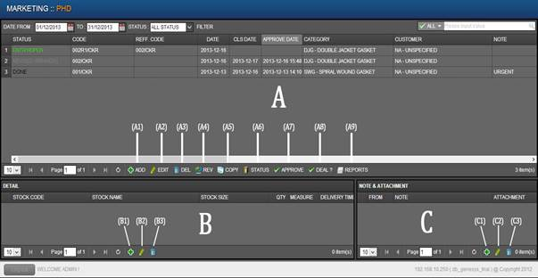
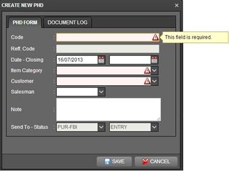
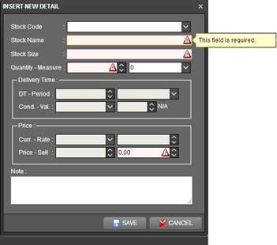
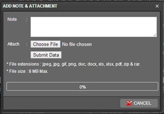
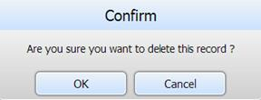
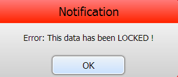
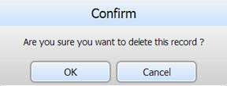

Genesys User Manual Version 1.0.0 |
Table of Contents Page |
| Genesys Home › User Manual Home › PHD Branch |
PHD (Permintaan Harga dan Delivery)
1. Pada bagian atas layar pilih Marketing à PHD, klik PHD.
2. Layar akan tampil seperti di bawah ini, terdiri atas 3 (tiga) bagian yaitu: (A) HEADER (atas), (B) DETAIL (kiri bawah), dan (B) NOTE & ATTACHMENT (kanan bawah) .

3. Data PHD memiliki berbagai macam status yang bisa dilihat pada bagian HEADER. Berikut status yang menunjukkan bahwa data dapat diubah atau dihapus:
- ENTRY/OPEN : Untuk PHD yang baru di input.
- NEED APPROVAL : Untuk PHD yang siap untuk di kirim ke pusat.
- APPROVED : Untuk PHD yang sudah terkirim ke pusat, tapi belum di proses.
- REVISED : Untuk PHD yang telah di revisi.
- DONE : Untuk PHD yang telah di jawab oleh pusat.
Berikut status yang menunjukkan bahwa data tidak dapat diubah atau dihapus:
- APPROVED, PROCESS, REVISED, DEAL
4. Menambah data
Untuk menambah data baru klik icon (A1) , maka akan muncul tampilan seperti ini.

Code : isikan nomor Kode/No PHD.
Reff. Code : akan otomatis terisi dengan kode PHD jika terjadi revisi.
Date – Closing : klik icon pada sebelah kanan field. Field bagian kiri untuk mengisi tanggal pembuatan PHD, field bagian kanan untuk mengisi tanggal closing PHD.
Item Category : klik icon pada sebelah kanan field untuk memilih item category.
Customer : klik icon pada sebelah kanan field untuk memilih customer.
Salesman : klik icon pada sebelah kanan field untuk memilih salesman.
Note : isi catatan penting yang berkaitan dengan PHD jika ada.
Jika pada field terdapat icon maka field harus diisi.
Setelah semua data dimasukkan klik tombol , maka list pada header akan bertambah data baru dengan code yang baru saja dibuat dengan status “ENTRY”. Jika batal memasukkan data klik icon
Untuk menambahkan data stock klik salah satu list pada header sesuai dengan nomor PHD yang diinginkan lalu klik icon (B1) pada bagian DETAIL, maka akan muncul tampilan seperti ini.

Stock Code : tidak perlu di isi.
Stock Name : isi dengan nama stock barang.
Stock Size : isi dengan ukuran dari stock barang.
Quantity – Measure : Field bagian kiri untuk mengisi jumlah (quantity) dengan cara klik icon pada sebelah kanan field atau ketikkan secara manual, field bagian kanan untuk mengisi satuan (measure) dengan cara klik icon pada sebelah kanan field untuk memilih satuan.
Note : isi catatan penting yang berkaitan dengan data detail stock jika ada.
Untuk grup box Delivery Time dan Price tidak perlu diisi.
Jika pada field terdapat icon maka field harus diisi.
Setelah semua data dimasukkan klik tombol , maka list stock pada bagian DETAIL akan bertambah. Jika batal memasukkan data klik icon
Untuk melampirkan berkas atau catatan penting klik salah satu list pada header sesuai dengan nomor PHD yang di inginkan, lalu klik icon (C1), maka akan muncul tampilan seperti ini.

Note : isi dengan catatan penting yang berkaitan dengan berkas lampiran jika ada.
Attach : klik tombol untuk memilih berkas yang akan dilampirkan.
Untuk menyimpan klik tombol , maka list pada bagian NOTE & ATTACHMENT akan bertambah. Jika batal memasukkan data klik icon
5. Menghapus data
Klik salah satu list PHD pada bagian HEADER yang akan dihapus lalu klik icon (A3), maka akan muncul seperti ini.

Klik tombol ‘OK’ jika data akan dihapus atau ‘Cancel’ untuk membatalkan.
Jika system tidak mengijinkan data untuk dihapus maka akan muncul notification seperti ini.

Klik ‘OK’ untuk kembali.
Pilih list stock code yang akan dihapus, lalu klik icon (B3), maka akan muncul seperti ini.

Klik tombol ‘OK’ jika data akan dihapus atau ‘Cancel’ untuk membatalkan.
Pilih list yang akan dihapus, lalu klik icon (C1), maka akan muncul seperti ini.
Klik tombol ‘OK’ jika data akan dihapus atau ‘Cancel’ untuk membatalkan.
6. Mengubah data
Pilih salah satu list PHD yang akan diubah datanya lalu klik icon (A2). Ubah data sesuai keinginan.
Pilih salah satu list stock yang akan diubah datanya lalu klik icon (B2). Ubah data sesuai keinginan.
Pilih salah satu list yang akan diubah datanya lalu klik icon (C2). Ubah data sesuai keinginan.
7. Data baru PHD yang sudah selesai dibuat dengan status “ENTRY” perlu diubah statusnya menjadi “NEED APPROVAL” untuk bisa di proses pada tahap selanjutnya. Cara mengubah status :
Pilih salah satu list PHD lalu klik icon (A6). Ubah Status dari ‘Entry’ menjadi ‘Need Approval’ lalu klik tombol .

8. Fungsionalitas icon
|
ICON |
KETERANGAN |
|
(A1) - |
Menambah data PHD baru pada bagian header |
|
(A2) - |
Mengubah data PHD pada bagian header |
|
(A3) - |
Menghapus data PHD pada bagian header |
|
(A4) - |
Revisi data PHD yang masih dalam status “PROSES” |
|
(A5) - |
Mengkopi data PHD lama, menjadi PHD Baru |
|
(A6) - |
Mengubah status “NEED APPROVAL” menjadi “APPROVED”. Serta mengirim data PHD ke PUSAT. |
|
(A7) - |
Mengubah status “ENTRY/OPEN” menjadi “NEED APPROVAL” atau sebaliknya. |
|
(A8) - |
Mengubah status “DONE” menjadi “CUST. PENDING”, “CUST. CANCEL”, atau “CUST. DEAL” |
|
(A9) - |
Menampilkan print out PHD |
|
(B1) - |
Menambah data stock pada bagian detail |
|
(B2) - |
Mengubah data stock pada bagian detail |
|
(B3) - |
Menghapus data stock pada bagian detail |
|
(C1) - |
Menambah note atau berkas file pada bagian note & attachment |
|
(C2) - |
Mengubah note atau berkas file pada bagian note & attachment |
|
(C3) - |
Menghapus note atau berkas file pada bagian note & attachment |
9. Keterangan Status:
|
NO |
STATUS |
KETERANGAN |
|
1 |
ENTRY |
phd baru dibuat |
|
2 |
NEED APPROVAL |
phd butuh persetujuan dari pihak yang berwenang untuk mengirimkan phd ke pusat |
|
3 |
APPROVED |
pihak yang berwenang sudah menyetujui phd dan phd sudah masuk ke pusat |
|
4 |
PROCESS |
phd sudah direspon oleh pusat dan sedang diproses |
|
5 |
PARTIAL ANSWER |
data phd hanya sebagian dijawab oleh pusat |
|
6 |
DONE |
pusat sudah menjawab semua data phd yang dikirimkan |
|
7 |
CUST. CANCEL |
keterangan bahwa customer menolak penawaran harga |
|
8 |
CUST. PENDING |
keterangan bahwa customer belum memberikan jawaban terhadap penawaran harga |
|
9 |
CUST. DEAL |
keterangan bahwa customer meyetujui penawaran harga |
|
10 |
REVISED (BRANCH) |
phd direvisi dan sudah tidak bisa diproses |
|
11 |
CANCEL (HO) |
cabang salah memasukkan kelompok kategori produk, pusat berhak membatalkan phd |
|
12 |
NO QUOTE (HO) |
bila tidak mendapat penawaran harga dari beberapa supplier/supplier tidak sanggup menawarkan |
|
13 |
REJECT (HO) |
phd dari cabang tidak lengkap, dan staff phd sudah meminta kelengkapan data ke cabang, dan tidak mendapatkan data setelah 2 minggu |
|
14 |
NOT PROCESS (HO) |
phd berupa barang yang di luar lingkup perusahaan, tidak diproses karena sudah disetujui oleh RSM/COO |
|
15 |
PRICE LIST (HO) |
item phd tersebut sudah ada di price list, staff phd tidak akan memberikan jawaban harga, cabang dapat mengecek di price list |